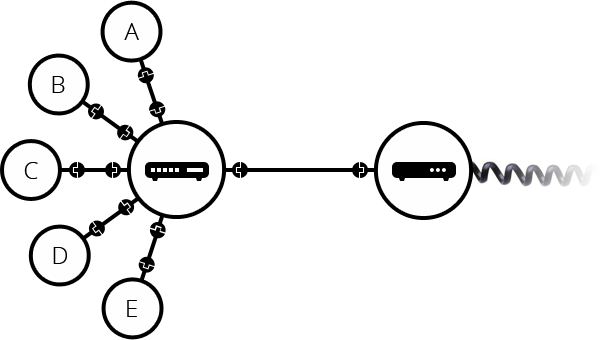
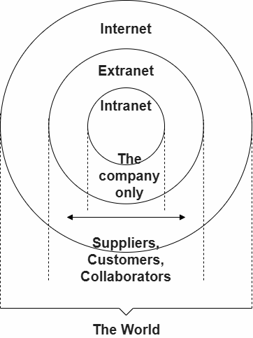

Hardware, the under water wire. Web (World Wide Web) system works on this, Web allows data to be accessed across the internet.
Use ethernet cable / Wi-Fi / bluetooth to make computers communicate with each other.
It is hard to connect 100 computers to talk with each other with cable, solution: router
A Network

Comp A wants to send to B, Comp A gives data to router, router sends it to B and not C or D.
It is also hard to connect 1000000 computers with just 1 router, solution: connect routers
A Network of Networks

This has no scaling problem now.
But this is my network, in my house, how do I connect with my neighbour's network? Hard to use cable from my house to neighbour. Solution: telephone cable.
Modem - turns my network data into telephone infrastructure kind of data.
How to make sure my data gets to the right neighbour? ISP - company that has special routers that are connected with other ISP's router
The internet = infrastructure of network

Anything that is linked to a computer has an IP address.
It is made of 4 numbers seperated by dots: 192.168.2.10 (these can change over time)
IP has alias like google.com to make it easier to use for us, this is domain name.
142.250.190.78 domain name is google.com
Entering both to the browser address bar works
We say we browse the Web with the Broser
Internet = technical infrastructure that connects computers (some computers are called Web servers)
Web = service on the Internet
There are other services on the Internet such as email and IRC
web page = page = HTML + resources like CSS, JS, media (img, sounds, videos) single page that is read and displayed in a web browser (google chrome)
website = site = collection of pages
web server = computer that hosts site on the internet
search engine = service = special site = used for finding other sites (google)
Site's pages all share the same domain name. The domain name alone = homepage / the home / site's main web page
Hosting = pages + resources are available on that computer, server sends pages that it hosts to users.
Search engine = service = special site that finds other sites and pages
Broser = infrastructure = software that receive / reads / display HTML doc / sites and pages
more stuff I havent read goes here
The language for clients and server to talk